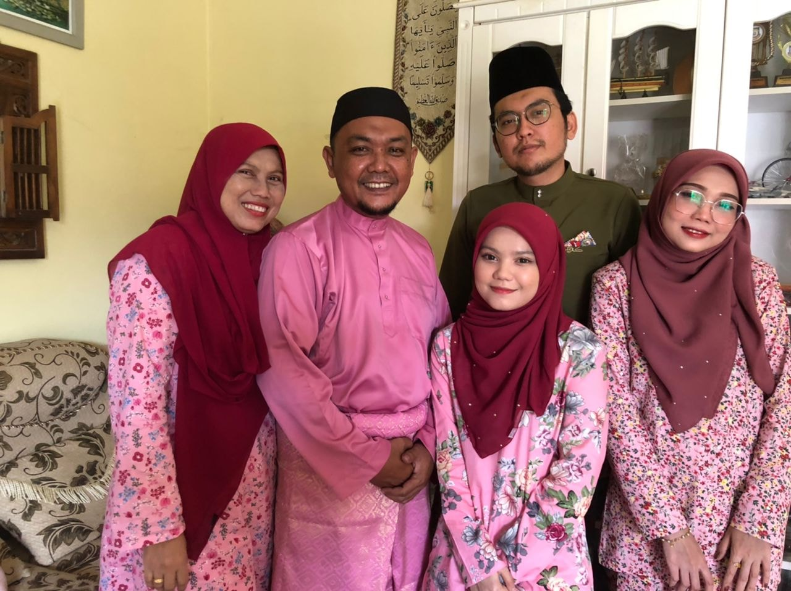

“My family is my life, and everything else comes second as far as what’s important to me.” ~Michael Imperioli
“My family is my life, and everything else comes second as far as what’s important to me.”
